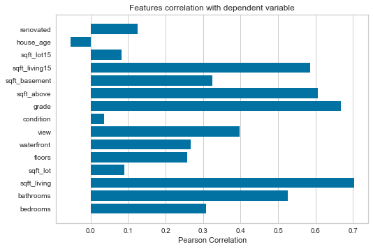

!pip install yellowbrick
Collecting yellowbrick
Using cached https://files.pythonhosted.org/packages/44/4c/7c04104a1e89a7a1d7d557d91219a47b4bf148f3f0e6f185dce24fb73b9b/yellowbrick-1.0.post1-py3-none-any.whl
Requirement already satisfied: numpy>=1.13.0 in /anaconda3/lib/python3.7/site-packages (from yellowbrick) (1.16.5)
Requirement already satisfied: cycler>=0.10.0 in /anaconda3/lib/python3.7/site-packages (from yellowbrick) (0.10.0)
Requirement already satisfied: matplotlib!=3.0.0,>=2.0.2 in /anaconda3/lib/python3.7/site-packages (from yellowbrick) (3.1.1)
Requirement already satisfied: scikit-learn>=0.20 in /anaconda3/lib/python3.7/site-packages (from yellowbrick) (0.20.3)
Requirement already satisfied: scipy>=1.0.0 in /anaconda3/lib/python3.7/site-packages (from yellowbrick) (1.3.1)
Requirement already satisfied: six in /anaconda3/lib/python3.7/site-packages (from cycler>=0.10.0->yellowbrick) (1.12.0)
Requirement already satisfied: kiwisolver>=1.0.1 in /anaconda3/lib/python3.7/site-packages (from matplotlib!=3.0.0,>=2.0.2->yellowbrick) (1.1.0)
Requirement already satisfied: pyparsing!=2.0.4,!=2.1.2,!=2.1.6,>=2.0.1 in /anaconda3/lib/python3.7/site-packages (from matplotlib!=3.0.0,>=2.0.2->yellowbrick) (2.4.0)
Requirement already satisfied: python-dateutil>=2.1 in /anaconda3/lib/python3.7/site-packages (from matplotlib!=3.0.0,>=2.0.2->yellowbrick) (2.8.0)
Requirement already satisfied: setuptools in /anaconda3/lib/python3.7/site-packages (from kiwisolver>=1.0.1->matplotlib!=3.0.0,>=2.0.2->yellowbrick) (41.0.1)
Installing collected packages: yellowbrick
Successfully installed yellowbrick-1.0.post1
import pandas as pd
import numpy as np
import matplotlib.pyplot as plt
house_data = pd.read_csv('datasets/house_data_processed.csv')
house_data.head()
| price | bedrooms | bathrooms | sqft_living | sqft_lot | floors | waterfront | view | condition | grade | sqft_above | sqft_basement | sqft_living15 | sqft_lot15 | house_age | renovated | |
|---|---|---|---|---|---|---|---|---|---|---|---|---|---|---|---|---|
| 0 | 221900.0 | 3 | 1.00 | 1180 | 5650 | 1.0 | 0 | 0 | 3 | 7 | 1180 | 0 | 1340 | 5650 | 59 | 0 |
| 1 | 538000.0 | 3 | 2.25 | 2570 | 7242 | 2.0 | 0 | 0 | 3 | 7 | 2170 | 400 | 1690 | 7639 | 63 | 1 |
| 2 | 180000.0 | 2 | 1.00 | 770 | 10000 | 1.0 | 0 | 0 | 3 | 6 | 770 | 0 | 2720 | 8062 | 82 | 0 |
| 3 | 604000.0 | 4 | 3.00 | 1960 | 5000 | 1.0 | 0 | 0 | 5 | 7 | 1050 | 910 | 1360 | 5000 | 49 | 0 |
| 4 | 510000.0 | 3 | 2.00 | 1680 | 8080 | 1.0 | 0 | 0 | 3 | 8 | 1680 | 0 | 1800 | 7503 | 28 | 0 |
house_data.shape
(21613, 16)
target = house_data['price']
features = house_data.drop('price', axis=1)
features.columns
Index(['bedrooms', 'bathrooms', 'sqft_living', 'sqft_lot', 'floors',
'waterfront', 'view', 'condition', 'grade', 'sqft_above',
'sqft_basement', 'sqft_living15', 'sqft_lot15', 'house_age',
'renovated'],
dtype='object')
from yellowbrick.target import FeatureCorrelation
feature_names = list(features.columns)
visualizer = FeatureCorrelation(labels = feature_names)
visualizer.fit(features, target)
visualizer.poof()

<matplotlib.axes._subplots.AxesSubplot at 0x1c21dc0950>
Select K-Best features to predict price of houses¶
from sklearn.feature_selection import SelectKBest
from sklearn.feature_selection import f_regression
select_univariate = SelectKBest(f_regression, k=5).fit(features, target)
features_mask = select_univariate.get_support()
features_mask
array([False, True, True, False, False, False, False, False, True,
True, False, True, False, False, False])
selected_columns = features.columns[features_mask]
selected_columns
Index(['bathrooms', 'sqft_living', 'grade', 'sqft_above', 'sqft_living15'], dtype='object')
selected_features = features[selected_columns]
selected_features.head()
| bathrooms | sqft_living | grade | sqft_above | sqft_living15 | |
|---|---|---|---|---|---|
| 0 | 1.00 | 1180 | 7 | 1180 | 1340 |
| 1 | 2.25 | 2570 | 7 | 2170 | 1690 |
| 2 | 1.00 | 770 | 6 | 770 | 2720 |
| 3 | 3.00 | 1960 | 7 | 1050 | 1360 |
| 4 | 2.00 | 1680 | 8 | 1680 | 1800 |
selected_features.describe()
| bathrooms | sqft_living | grade | sqft_above | sqft_living15 | |
|---|---|---|---|---|---|
| count | 21613.000000 | 21613.000000 | 21613.000000 | 21613.000000 | 21613.000000 |
| mean | 2.114757 | 2079.899736 | 7.656873 | 1788.390691 | 1986.552492 |
| std | 0.770163 | 918.440897 | 1.175459 | 828.090978 | 685.391304 |
| min | 0.000000 | 290.000000 | 1.000000 | 290.000000 | 399.000000 |
| 25% | 1.750000 | 1427.000000 | 7.000000 | 1190.000000 | 1490.000000 |
| 50% | 2.250000 | 1910.000000 | 7.000000 | 1560.000000 | 1840.000000 |
| 75% | 2.500000 | 2550.000000 | 8.000000 | 2210.000000 | 2360.000000 |
| max | 8.000000 | 13540.000000 | 13.000000 | 9410.000000 | 6210.000000 |
from sklearn.preprocessing import scale
X = pd.DataFrame(data=scale(selected_features), columns=selected_features.columns)
y = target
/anaconda3/lib/python3.7/site-packages/ipykernel_launcher.py:3: DataConversionWarning: Data with input dtype int64, float64 were all converted to float64 by the scale function.
This is separate from the ipykernel package so we can avoid doing imports until
X.describe()
| bathrooms | sqft_living | grade | sqft_above | sqft_living15 | |
|---|---|---|---|---|---|
| count | 2.161300e+04 | 2.161300e+04 | 2.161300e+04 | 2.161300e+04 | 2.161300e+04 |
| mean | -1.051951e-15 | 3.174253e-16 | -2.328998e-15 | 3.892022e-16 | -1.506632e-16 |
| std | 1.000023e+00 | 1.000023e+00 | 1.000023e+00 | 1.000023e+00 | 1.000023e+00 |
| min | -2.745920e+00 | -1.948891e+00 | -5.663344e+00 | -1.809494e+00 | -2.316325e+00 |
| 25% | -4.736214e-01 | -7.108948e-01 | -5.588357e-01 | -7.226314e-01 | -7.244971e-01 |
| 50% | 1.756067e-01 | -1.849914e-01 | -5.588357e-01 | -2.758102e-01 | -2.138280e-01 |
| 75% | 5.002207e-01 | 5.118578e-01 | 2.919156e-01 | 5.091458e-01 | 5.448802e-01 |
| max | 7.641730e+00 | 1.247807e+01 | 4.545672e+00 | 9.204044e+00 | 6.162239e+00 |
from sklearn.model_selection import train_test_split
X_train, X_test, y_train, y_test = train_test_split(X, y, test_size =.2)
from sklearn.linear_model import LinearRegression
linear_regression = LinearRegression()
linear_regression.fit(X_train, y_train)
LinearRegression(copy_X=True, fit_intercept=True, n_jobs=None,
normalize=False)
y_pred = linear_regression.predict(X_test)
df = pd.DataFrame({'test': y_test, 'Predicted': y_pred})
df.head()
| test | Predicted | |
|---|---|---|
| 21478 | 599832.0 | 904744.963344 |
| 3301 | 820000.0 | 602983.952916 |
| 12175 | 490000.0 | 547729.542926 |
| 6643 | 639500.0 | 598154.007591 |
| 4491 | 673200.0 | 792729.879403 |
from sklearn.metrics import r2_score
score = linear_regression.score(X_train, y_train)
r2score = r2_score(y_test, y_pred)
print('Score: {}'.format(score))
print('r2_score: {}'.format(r2score))
Score: 0.5444091320826302
r2_score: 0.5431221425987303
linear_regression.coef_
array([-26976.77022771, 229889.80943053, 130265.8967593 , -70017.26585974,
15662.22164226])
linear_regression.intercept_
540209.0872204581
import statsmodels.api as sm
Fit and predict¶
X_train = sm.add_constant(X_train)
/anaconda3/lib/python3.7/site-packages/numpy/core/fromnumeric.py:2389: FutureWarning: Method .ptp is deprecated and will be removed in a future version. Use numpy.ptp instead.
return ptp(axis=axis, out=out, **kwargs)
model = sm.OLS(y_train, X_train).fit()
y_pred = model.predict(X_train)
print(model.summary())
OLS Regression Results
==============================================================================
Dep. Variable: price R-squared: 0.544
Model: OLS Adj. R-squared: 0.544
Method: Least Squares F-statistic: 4131.
Date: Mon, 23 Sep 2019 Prob (F-statistic): 0.00
Time: 08:37:19 Log-Likelihood: -2.3931e+05
No. Observations: 17290 AIC: 4.786e+05
Df Residuals: 17284 BIC: 4.787e+05
Df Model: 5
Covariance Type: nonrobust
=================================================================================
coef std err t P>|t| [0.025 0.975]
---------------------------------------------------------------------------------
const 5.402e+05 1888.451 286.059 0.000 5.37e+05 5.44e+05
bathrooms -2.698e+04 2954.686 -9.130 0.000 -3.28e+04 -2.12e+04
sqft_living 2.299e+05 4657.604 49.358 0.000 2.21e+05 2.39e+05
grade 1.303e+05 3242.822 40.171 0.000 1.24e+05 1.37e+05
sqft_above -7.002e+04 4148.247 -16.879 0.000 -7.81e+04 -6.19e+04
sqft_living15 1.566e+04 3113.223 5.031 0.000 9559.989 2.18e+04
==============================================================================
Omnibus: 14581.389 Durbin-Watson: 2.005
Prob(Omnibus): 0.000 Jarque-Bera (JB): 1162286.984
Skew: 3.599 Prob(JB): 0.00
Kurtosis: 42.516 Cond. No. 5.87
==============================================================================
Warnings:
[1] Standard Errors assume that the covariance matrix of the errors is correctly specified.
linear_regression.intercept_
540209.0872204581
linear_regression.coef_
array([-26976.77022771, 229889.80943053, 130265.8967593 , -70017.26585974,
15662.22164226])